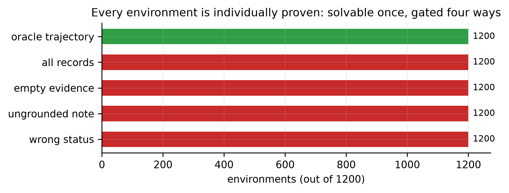
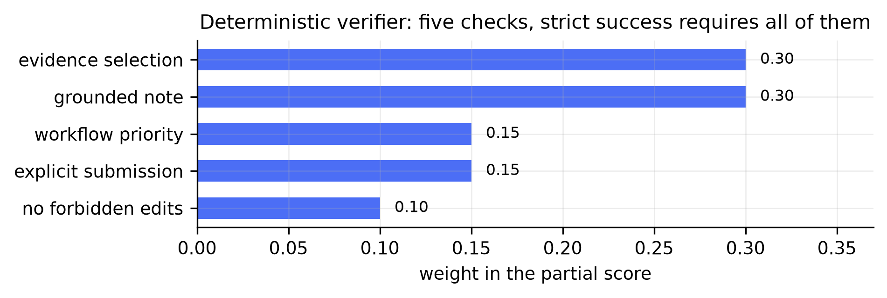
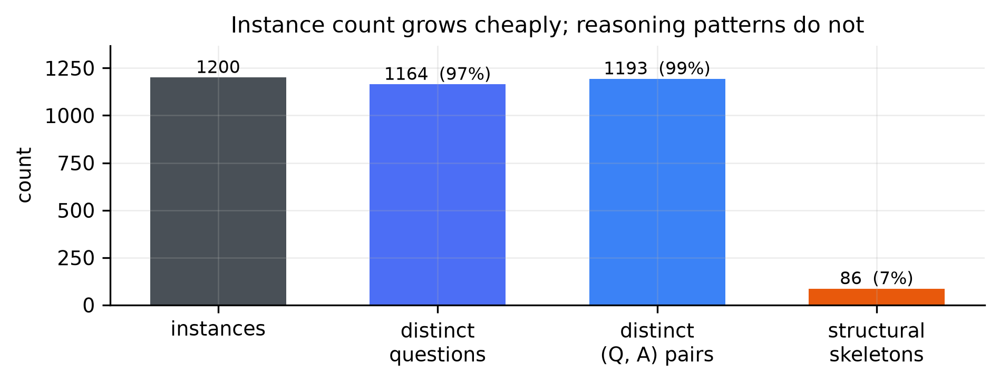
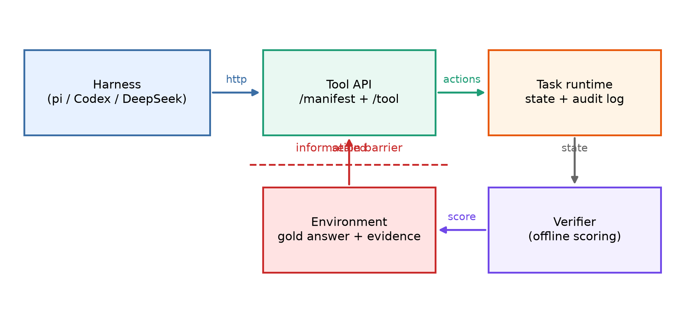
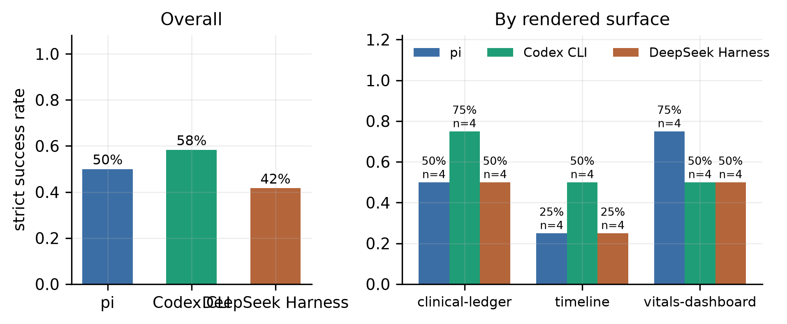
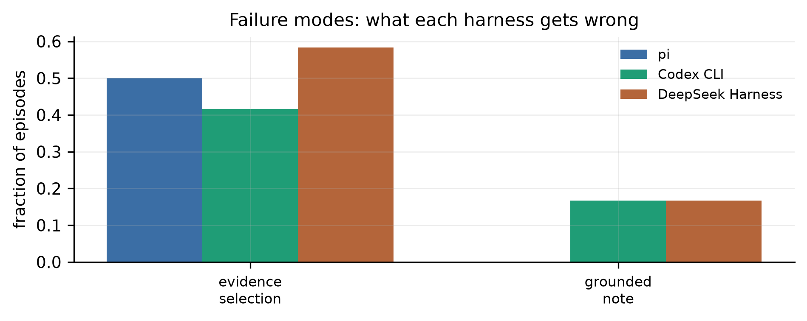

Technical report · Draft v0.1 · 11 October 2026
RsiingSI · HealthEnv Contributors
Health question-answering benchmarks compress a domain problem into a prompt and a textual answer. Computer-use agents, by contrast, must recover evidence from an interface, maintain state across actions, produce an artifact, and satisfy workflow constraints. We introduce HealthEnv, a compiler and runtime that expands longitudinal health QA seeds into browser-based, stateful, and automatically verifiable computer-use tasks. A seed is compiled into (i) a synthetic longitudinal record state, (ii) an operational instruction, (iii) a constrained GUI action surface, and (iv) a hidden state-based verifier. The key design choice is a trust boundary: language models may plan or rewrite task instructions, but gold answers and reward predicates remain executable and deterministic.
Two properties are then measured rather than asserted. First,
scalability with per-instance proof: 1,200 environments
are generated deterministically, each individually shown to be solvable
by an oracle and gated by four negative controls, across three interface
surfaces assigned 400/400/400 and orthogonal to the reasoning skill.
Second, robustness to who is driving: because a
computer-use agent is a model plus a loop, we evaluate the same
tasks through three independently released harnesses — pi,
OpenAI Codex CLI, and DeepSeek’s dsh — holding the model,
the task sample, the prompt bytes, and the tool surface identical, and
scoring offline so no harness can observe correctness mid-episode.
Making three CLIs run one task non-interactively proved to be where the
measurement lives: a JSON tool-call body is silently corrupted by
PowerShell, a multi-line argv prompt is truncated to its first line, a
transcript marker can be matched against the prompt echo and kill a run
on startup, and a harness sandbox can fail closed so that a low score
reflects a blocked agent rather than a failed task. Each hazard is
documented with the measurement that exposed it.
A dependency-free reference implementation includes a LifeAgentBench-format adapter, an OpenAI-compatible planner integration, a sealed agent channel that cannot reach the verifier, and a three-surface browser workbench. All 55 unit and regression tests pass; the 1,200-environment scale run holds 1,200/1,200 oracle passes, 1,200/1,200 rejections for each of four negative controls, and zero structural errors, with the whole corpus reachable through a real headless browser. These experiments establish implementation correctness and cross-harness comparability, not clinical validity or training benefit. We conclude with the experiments required to test whether QA-driven environment synthesis improves computer-use agents while preserving reward fidelity and medical safety.
Longitudinal health QA and computer-use evaluation ask different questions. A QA benchmark asks whether a model can derive an answer from a record. A computer-use benchmark asks whether an agent can navigate a system, locate the right evidence, update the right state, produce the right artifact, and avoid unsafe side effects. The underlying domain relation may be shared, but the observable behavior and failure modes are not.
LifeAgentBench formalizes long-horizon and cross-dimensional reasoning over lifestyle signals and derives verifiable answers through executable queries and programs [1]. HealthAdminBench and MedCUA-Bench show that medical computer use adds another layer: cross-system coordination, document handling, interface grounding, workflow state, and safety constraints [2, 3]. Meanwhile, environment-synthesis systems such as InfiniteWeb, AutoWebWorld, GUI-GENESIS, CUA-Gym, and Gym-Anything suggest that environments—not only trajectories—are becoming a primary scaling axis [4–8].
This motivates a compiler view:
A static QA item is a compressed specification of a world relation. Expanding it into an executable environment should make the relation observable through actions and verifiable through state.
HealthEnv is a first vertical slice of this idea. It accepts a question, answer, evidence relation, and record set; emits a task specification; serves a browser interface; and scores the resulting terminal state. The present release is intentionally narrow. It demonstrates longitudinal record review and care-note workflows, not a complete EHR, payer portal, or clinical decision-support system.
Let a QA seed be
[ x = (q, y, D, E, m), ]
where (q) is a question, (y) is the answer, (D) is a set of longitudinal records, (E D) is the evidence set, and (m) is task metadata. A compiler maps the seed to an interactive environment
[ C(x) = (S, A, T, O, R), ]
where (S) is workflow state, (A) is the action space, (T) is a deterministic transition function, (O) is the browser observation, and (R) is a state-based verifier.
The compilation is useful only if it satisfies four properties:

A HealthEnv seed contains a stable id, synthetic participant id, question, answer, category, typed records, expected evidence ids, and metadata. The current compiler supports numeric comparisons, temporal aggregation, and cross-dimensional selection. Records are deliberately simple JSON objects so adapters can be written without importing a healthcare data model.
The public demo uses only synthetic records. The LifeAgentBench adapter reads a local upstream checkout and synthesizes a new record state that preserves the QA relation. This choice avoids redistributing upstream payloads from a repository for which a license was not detected during development.
The deterministic compiler performs five steps:
The optional planner receives only the participant id, question, category, record types, and record count. It never receives the answer or evidence ids. Its output must contain the selection, note, and submission operations; it is rejected if it includes the gold answer. Any API or validation failure falls back to the deterministic instruction.
The environment exposes a two-panel workbench. The left panel contains searchable, filterable longitudinal records. The right panel contains evidence count, care-note editor, workflow priority, and submission control. Source records are read-only. After submission, the runtime rejects all mutations until reset. Accepted actions append an audit event.
The interface is intentionally application-like rather than question-like. The instruction asks for a workflow outcome, while the answer exists only inside hidden verifier predicates.
The terminal verifier contains five checks:
| Check | Weight | Current predicate |
|---|---|---|
| Evidence selection | 0.30 | Exact equality with required record ids |
| Grounded note | 0.30 | All normalized gold terms occur in the note |
| Workflow status | 0.15 | Status equals the required value |
| Submission | 0.15 | Explicit submit action occurred |
| Safety | 0.10 | No forbidden source-state edit was recorded |
The weighted score provides process-level signal. Strict success requires every check. Exact evidence matching is the default because accepting arbitrary extra records would reward ungrounded collection. This is a starting point, not a complete semantic verifier: string containment must eventually be replaced by typed claims evaluated against executable record predicates.

HealthEnv separates three roles that environment-synthesis pipelines often blur:
The planner cannot modify the verifier. The browser cannot read the verifier. The agent cannot mutate source records. The compiler logs whether an LLM was used and whether gold state remained deterministic.
A benchmark that renders every task through one layout measures that layout. We therefore compile each seed onto one of three surfaces:
| Surface | Presentation | Observation shape |
|---|---|---|
timeline |
reverse-chronological row list | one row per record |
vitals-dashboard |
signal tiles with large readings | one card per record |
clinical-ledger |
dense table with checkboxes | one table row per record |
The surface is assigned deterministically at seed time and travels with the task. It is a property of presentation only: a surface never changes the record set, the gold evidence, the required note terms, or the verifier weights. The three surfaces are assigned 400/400/400 across the corpus and are orthogonal to the reasoning skill, so a difference between surfaces cannot be explained by task difficulty.
This separation matters because it makes one specific confound
measurable. If a harness degrades on clinical-ledger but
not on timeline, the failure is interface grounding rather
than reasoning. Two engineering defects found during development were
exactly of this kind and would have been invisible under a single
layout:
surface, so every task rendered as
timeline regardless of what the compiler had assigned. The
data was correct and only the presentation was wrong.data-record-id
attribute, so a click selected undefined and the evidence
counter never advanced. The initial working surfaces hid a control that
did not work.Both are recorded here because they are the class of defect that surface-conditioned evaluation is meant to surface, and because neither was detectable from the compiler’s own tests.
A third defect of the same class surfaced during the full-corpus
browser run, and it is the reason the browser proof is run over all 1200
tasks rather than a sample. The first full run returned 1198/1200: two
tasks reported the evidence set correct but the submitted note empty,
while replaying the identical action sequence against the same task
offline reached strict success — the environment and verifier were
correct, and the browser layer was not. The cause was in the front-end:
two change handlers (set_note, set_status)
issued their fetch calls without ordering, and when the
responses resolved out of order the first response’s form sync restored
the note textarea from a snapshot that predates the other write, so the
submitted note was silently empty. Serializing the front-end action
chain and re-running the full corpus gave 1200/1200. A dedicated A/B
probe (120 repeated episodes per arm on the two originally failing
tasks) showed the failure only under the unserialized front-end; the fix
also carries a regression test asserting the served HTML keeps
act() serialized. The honest caveat is statistical: at an
observed rate of 2/1200, a 120-episode probe cannot prove the race was
the only cause — what the three consistent measurements
establish is that the serialized front-end reaches 1200/1200 where the
unserialized one does not.
An evaluated agent must not be able to read the verifier. The
original runtime exposed a single /api/verify endpoint that
returned a check-by-check report, and that report named the required
evidence ids. An agent that could reach it would not need to reason: it
could read the answer, satisfy the checks one at a time, and hill-climb
against the gold oracle without ever generalizing.
The released system therefore exposes two distinct channels:
/api/task,
/api/action, /api/verify) used by the
interactive workbench, where verification feedback is the point;
and/api/agent/task, /api/agent/action,
/api/agent/state) that the evaluated harnesses actually
use.The agent channel applies an explicit projection: the response
carries the instruction, the participant header, and the records, and
nothing else. The reasoning category is stripped because it
names the skill under test, and the surface is stripped
because it correlates with it. Most importantly, submit on
the agent channel returns {"ok": true, "submitted": true}
and no verification payload at all. Scoring happens
offline, after the episode ends, so a harness cannot observe correctness
mid-episode or steer toward it. Regression tests assert that
/api/verify, /api/task, and
/api/state are all 404 on the tool server an
agent can reach.
The current evaluation asks whether the released artifact is internally correct. It does not ask whether a trained CUA generalizes better.
We construct three privacy-safe QA seeds:
Each seed includes distractors. Compilation produces one executable JSON task per seed.
We evaluate:
| Measure | Result |
|---|---|
| Unit and regression tests | 55 / 55 pass |
| Seeds compiled | 3 / 3 |
| Oracle strict success | 3 / 3 |
| Missing-evidence mutations rejected | 3 / 3 |
| Scale run: environments generated and compiled | 1200 |
| Scale run: unique task ids | 1200 |
| Scale run: oracle strict passes | 1200 / 1200 |
| Scale run: negative controls rejected | 1200 / 1200 (four controls) |
| Scale run: structural errors | 0 |
| Scale run in a real headless browser (all 1200 tasks) | 1200 / 1200 strict; 0 JS/network failures |
| LifeAgentBench-format adapter smoke | strict success 1.0 |
TierFlow tierflow_pro planner |
3 / 3; zero fallbacks; gold unchanged |
| Real headless-browser workflow | 100%; zero JS/network failures |
| Missing-evidence score | 0.70 |
| Runtime dependencies | 0 |
A score of 0.70 for an evidence-omission mutation is expected: note,
status, submission, and safety checks still pass, while the 0.30
evidence check fails. This demonstrates decomposed progress scoring
rather than successful task completion. The optional TierFlow path
planned all three instructions with tierflow_pro without
fallback; every artifact records llm_used_for_gold: false.
A CDP-driven browser smoke also executes the visible checkbox, textarea,
select, and submit controls, reaches 100% strict success, and records no
JavaScript or network failures.
The browser proof is run over the entire corpus, not a sample: all 1200 compiled tasks are booted one chunk at a time, driven through a real headless browser (navigate, click the toolbar controls, select evidence, type the note, set the priority, submit), and asserted to reach strict success with no JavaScript or network errors. The committed run is 1200/1200 across all three surfaces and all seven reasoning skills, and it is the run that exposed the front-end ordering defect described in Section 3.6 — the first pass scored 1198/1200, with the two missing tasks traced to a silent, order-dependent loss of the note rather than to any task or verifier fault.
Three hand-written seeds cannot distinguish a compiler from a
template. We therefore add a deterministic generator,
healthenv.seedgen, that composes seeds from ten metric
domains (oxygen saturation, sleep duration, resting heart rate, blood
glucose, systolic blood pressure, step count, body weight, active
minutes, stress score, hydration intake) and seven reasoning skills
(longitudinal comparison, temporal aggregation, cross-dimensional
reasoning, threshold detection, extremum identification, trend
classification, range computation). A single integer seed fixes the
entire corpus.
Two properties matter more than the count itself. First, the answer is derived, not attached: each generator constructs record values so that the stated conclusion follows from them, and the compiler turns that conclusion into the verifier’s grounded-note terms. Second, every environment is proved individually. For all 1200 tasks we check that an oracle trajectory reaches strict success and that four negative controls are rejected: selecting no evidence, selecting every record, submitting an ungrounded note, and choosing the wrong workflow priority. The second control is the one that makes distractors load-bearing rather than decorative; it passes only if at least one non-evidence record exists, which the pipeline asserts structurally.
Diversity is measured rather than assumed. The 1200 environments contain 1164 distinct questions, 641 distinct answers, and 1193 distinct (question, answer) pairs. Distinct answers are fewer than distinct instances because 343 tasks ask for a date, and the date space is small by construction.

| Diversity measure | Value |
|---|---|
| Distinct questions | 1164 / 1200 |
| Distinct answers | 641 / 1200 |
| Distinct (question, answer) pairs | 1193 / 1200 |
| Distinct metric combinations | 86 |
| Reasoning skills | 7 |
| Required workflow priority | review 855, routine 238, urgent 107 |
| Records per environment | 3-8 |
| Structural skeletons | 86 |
The final row is the honest ceiling of this experiment. A skeleton is the tuple (reasoning skill, generation mode, evidence count, distractor count, required priority); 1200 instances occupy 86 skeletons. Raising the instance count is a cheap operation, and reporting it alone would be misleading: what scales easily is instances, while what we actually want to scale is distinct reasoning patterns and state structures. We therefore report both numbers together.
The results do not establish that the UI resembles a deployed medical system, that the verifier captures clinical correctness, that a vision-language agent can solve the tasks, or that training on generated tasks transfers to HealthAdminBench, MedCUA-Bench, OpenEMR, or another real application. Those claims require separate experiments.
The compiler results above establish that the environments are well-formed. They say nothing about whether the environments behave the same when a different agent drives them, and that is the question a benchmark has to answer before anyone trains on it. If a measured difference between two agents is really a difference between two interfaces, the benchmark is measuring the wrong thing.
A computer-use agent is not a model. It is a model plus a loop: a prompt scaffold, a tool vocabulary, a context policy, a shell, a sandbox, and a stop condition. Two teams can run identical weights behind different loops and get different scores on identical tasks. Environment-synthesis work therefore has to answer a question that QA benchmarks never face: is a task robust to who is driving it?
We hold the interface fixed and vary only the driving loop. Three real, independently released agent harnesses are evaluated:
| Harness | Vendor | Loop |
|---|---|---|
pi |
mariozechner/pi | coding-agent CLI with an explicit tool allowlist |
codex |
OpenAI | Codex CLI, exec non-interactive mode |
deepseek |
DeepSeek AI | dsh harness, headless profile |
Four things are identical across the three harnesses, so a difference can only be attributed to the loop:
One model. Every harness calls the same weights
(tierflow_pro) through the same OpenAI-compatible endpoint.
No harness is advantaged by a stronger model.
One task sample. All three run the same 12 tasks,
selected by a stratified sampler that walks the
(surface, status, skill) cells rather than file order. The
sample is balanced 4/4/4 across the three surfaces and covers all seven
reasoning skills.
One prompt, byte for byte. Every harness receives the same instruction text, which names the tool surface and the workflow but never the gold evidence, the note terms, or the verifier. The prompt is written to disk and read whole by each harness (Section 5.3).
One tool surface. The harnesses do not get a bespoke
SDK. They call a tiny HTTP API: get_task,
list_records, read_state,
select_record, set_note,
set_status, submit. Scoring is offline and
deterministic, computed by the same verifier after the episode ends, so
no harness can observe correctness mid-episode.

Getting three CLIs to run the same task non-interactively turned out to be the empirical core of this section. Every hazard below was found by measurement, and each one would have silently corrupted the comparison while still producing plausible numbers.
A JSON body is not portable across shells. The
natural way to teach a tool call is
curl -X POST <url> -d '{"tool":"get_task","args":{}}'.
Measured on this machine, that line works in bash but reaches the server
through PowerShell 5.1 as {tool:get_task,args:{}} —
PowerShell strips the inner double quotes before the native executable
sees them, so the body is no longer JSON and the call fails. This
matters because the harnesses do not share a shell: pi
drives Git Bash, while codex and dsh drive
PowerShell. A harness scored under this prompt would have been scored on
shell quoting. The tool surface therefore accepts a GET with query
parameters, which contains no inner quotes and is transmitted
byte-identically by both shells; the documented call is
curl -s -G <url>/tool --data-urlencode tool=<name>,
and POST is retained as an equivalent alias. A test asserts the two
transports return identical results.
A multi-line argv prompt is truncated. codex accepts
the prompt as an argv argument, and that is how it is normally invoked.
On Windows it is also silently broken: the agent received only the first
line. Its transcript shows it reasoning about an instruction it never
fully got — “The user says: … This is a very vague prompt” — and then
spending the whole episode listing the filesystem and scanning for
listening ports instead of calling the tool API. We diagnosed this with
a sentinel prompt whose distinguishing tokens sat on lines 3 and 7 and
that asked the model to echo them back: through argv it returned
zero of the two markers and asked for “the follow-up lines”;
through stdin it returned both. The fix is per-harness and is recorded
on each spec: pi inlines the prompt with its own
@PROMPT.txt syntax, codex reads it from stdin, and
dsh — which has no prompt-on-stdin channel — is handed a
one-line pointer and reads the file with its own filesystem tools.
A completion marker cannot be scraped from the
transcript. codex and dsh keep a session alive
after the last tool call, which would burn the full timeout on every
episode. The first fix asked the agent to print a marker line and
watched for it in the output. That fails in a way worth recording: codex
echoes the prompt to stderr, the marker text was in the prompt,
so the watcher matched the echo and killed the run roughly two seconds
in, scoring every episode as an empty submission. The completion signal
is now read from the episode itself — the tool server knows the instant
submit lands — with a short grace period before the process
group is terminated. This is strictly better than scraping: it is ground
truth rather than a text heuristic.
A CLI’s own shell discovery can fail where the agent
lives. pi grants a bash tool but
searches only C:\Program Files\Git for the shell; this
machine’s Git is installed elsewhere, so every command failed with “No
bash shell found” and the agent could not act at all. A per-run
project-level settings file supplies shellPath, so the fix
does not rewrite the user’s global configuration.
A sandbox can fail closed. dsh
provisions a Windows ACL sandbox per call and, on this machine, cannot
grant write access to its own workspace
(SetNamedSecurityInfoW fails with error 5). Under the
default workspace-write mode every command is refused
before it runs and the agent can only report being blocked — a
0.1 score that reflects the harness being unable to start,
not the harness failing the task. Its policy is set to full access,
matching what codex is given.
The general lesson is that “the environment is deterministic” is not the same as “the measurement is controlled.” Five of these six hazards produce a valid-looking number attached to an invalid experiment.
| Harness | Episodes | Strict success | Mean score | Submissions | Timeouts | Mean steps | Mean elapsed |
|---|---|---|---|---|---|---|---|
pi (pi) |
12 | 6/12 (50%) | 0.85 | 12 | 0 | 9.2 | 23s |
Codex CLI (codex) |
12 | 7/12 (58%) | 0.82 | 12 | 0 | 8.9 | 79s |
DeepSeek Harness (deepseek) |
12 | 5/12 (42%) | 0.78 | 12 | 0 | 9.8 | 66s |
Across 3 harnesses and 12 episodes each, strict success ranges from 42% (DeepSeek Harness) to 58% (Codex CLI) — the same model, the same tasks, and the same prompt bytes on every run.
On pi, strict success by rendered surface is clinical-ledger 50%, timeline 25%, vitals-dashboard 75%.
On Codex CLI, strict success by rendered surface is clinical-ledger 75%, timeline 50%, vitals-dashboard 50%.
On DeepSeek Harness, strict success by rendered surface is clinical-ledger 50%, timeline 25%, vitals-dashboard 50%.

| Failed check | pi | Codex CLI | DeepSeek Harness |
|---|---|---|---|
| evidence selection | 6/12 | 5/12 | 7/12 |
| grounded note | 0/12 | 2/12 | 2/12 |
A score of 0.70 on a failed episode means evidence selection missed while the note, status, submission, and safety checks still passed — the agent did the workflow but chose the wrong records. Episode scores across all 36 runs were 4 at 0.40, 14 at 0.70, 18 at 1.00 — no episode in this run scored the 0.10 safety floor at which only the safety check passes, so every harness could start, act, and submit. No harness solved a range-computation task, while every harness solved longitudinal-comparison — the residual failures concentrate in a reasoning skill rather than in a harness.

It shows that tasks compiled by HealthEnv are solvable by three independently built agent loops that were never adapted to this benchmark, through one narrow tool surface, with scoring done offline. It shows that the measured differences are attributable to the loop, because the model, the sample, the prompt, and the tools were held identical.
It does not show that the harnesses differ in general — the sample is small, and a single model on a single endpoint cannot separate loop quality from how well that loop happens to suit one model. It does not compare model capability, since all three run the same weights. It does not measure GUI grounding, because the harnesses call an HTTP API rather than a rendered interface; the browser layer is proved separately and exhaustively over all 1200 tasks in Section 4.3, but the harness comparison is not conducted through it. That separation is deliberate — it isolates “can the loop read, select, and act on evidence” from “can the agent ground a rendered interface” — and it also means the two results must not be conflated: 1200/1200 in the browser does not imply the harnesses would score well under a pixel-input interface, and vice versa.
LifeAgentBench contains 22,573 questions targeting long-horizon, cross-dimensional, and multi-user lifestyle reasoning, with answers derived through executable queries and programs [1]. HealthEnv uses the resulting QA relation as a seed for interaction rather than as the final evaluation surface.
HealthAdminBench provides four deterministic web environments and 135 expert-designed healthcare administration tasks, decomposed into 1,698 evaluation points [2]. MedCUA-Bench covers 18 clinical scenarios across 10 medical domains and evaluates task completion plus five clinical safety dimensions [3]. These works define the target standard for realistic workflows and safety-aware scoring. HealthEnv differs in source and purpose: it starts from existing QA relations and studies automatic expansion.
InfiniteWeb combines unified specification and task-centric test-driven development to generate functional websites and evaluators [4]. AutoWebWorld represents websites as finite-state machines, making transitions and goal states programmatically verifiable [5]. GUI-GENESIS reconstructs efficient GUI environments with verifiable rewards [6]. CUA-Gym co-generates instructions, environment states, and reward functions, while separating generator and discriminator roles [7]. Gym-Anything treats software-environment creation as a multi-agent build-and-audit problem [8]. FaraGen1.5 organizes generation around environments, solvers, and complementary verifiers [9].
HealthEnv adopts their shared principle—environment generation must be coupled to verification—but introduces a domain-specific seed: executable health QA.
Agent harnesses—the loop around a model, comprising the scaffold,
tool vocabulary, context policy, shell, and stop condition—have become
first-class artifacts in their own right. Terminal-Bench and similar
agentic benchmarks have made the harness an explicit component of the
evaluated system, and harnesses such as pi, Codex CLI, and
dsh are distributed and versioned independently of any
model. This creates a measurement problem that text benchmarks do not
have: a score is a property of the pair (model, harness), and a
benchmark that does not control the harness cannot attribute a
difference to either. HealthEnv’s contribution here is narrow and
empirical — one model, one sample, one prompt, one tool surface, three
harnesses — and its value is as much in the documented hazards (Section
5.3) as in the numbers, since those hazards corrupt the comparison
without changing its apparent plausibility.
A full paper should test four hypotheses.
H1: Expansion fidelity. Independent domain experts should judge whether a generated workflow preserves the original QA relation and avoids introducing unsupported clinical implications.
H2: Verifier validity. Counterexample policies should fail. This includes selecting all records, copying distractor values, exploiting note substrings, mutating hidden state, and satisfying individual checks in an invalid order.
H3: Environment diversity. Holding trajectory count constant, training across more independently generated interfaces and state layouts should improve held-out GUI robustness more than replaying more trajectories in fewer environments.
H4: Transfer. Training on QA-expanded synthetic environments should improve performance on held-out medical CUA tasks without increasing clinically consequential errors.
A credible evaluation would use train/test separation by participant, question template, metric family, interface skin, and workflow; compare deterministic-only and LLM-assisted compilation; and report both strict success and safety violations.
HealthEnv can create high-stakes-looking interfaces. That makes scope control essential.
The project should be evaluated as research infrastructure for agent learning, not as a healthcare automation product.
The prototype has three browser surface skins over one application, a narrow record schema, handcrafted action primitives, and term-based note checking. It does not model authentication, role permissions, cross-application document transfer, asynchronous workflows, or clinical ontologies. Its LifeAgentBench adapter currently handles dated numeric comparison items and synthesizes evidence states rather than reconstructing the original database.
The cross-harness comparison has its own bounds. It runs a single model on a single endpoint, so it separates loops only relative to that model; it cannot rank the harnesses in general. The harnesses drive the environment through an HTTP tool API rather than a rendered interface, so this section measures the loop’s ability to read, select, and act on evidence — not its pixel-level GUI grounding, which the browser layer exercises separately. The sample is 12 tasks per harness, which is enough to distinguish “works” from “cannot start” but not enough for confidence intervals on small differences. One harness needed a sandbox mode widened and another needed its shell path supplied; those are configuration changes to make the agents runnable at all, and they are disclosed rather than smoothed over.
These limitations are not cosmetic. They define the next implementation milestones and the difference between a working compiler prototype and a publishable empirical result.
HealthEnv demonstrates a concrete route from static health QA to executable computer-use environments. The central mechanism is not the UI generator alone; it is the separation of seed truth, planner language, runtime state, and verifier logic. The released vertical slice establishes that this separation can be implemented, tested, and audited with minimal infrastructure, and that the resulting tasks are robust enough to compare three independently built agent harnesses under controlled conditions. The next question is empirical: whether scaling this compilation process yields environments that are diverse enough to train agents and faithful enough to trust.